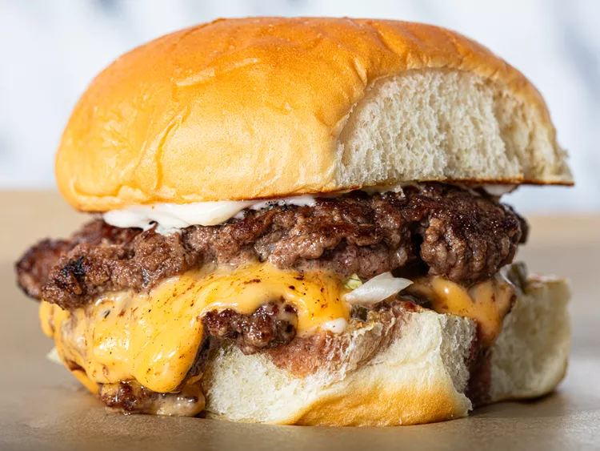

Cheeseburger

The best smash burger you've ever had!
Ingredients
- 80/20 ground beef
- Plain white bun
- American cheese
- White onion
- High smoke point oil such as avocado or canola
Equipment
- Cast iron or stainless steel pan; NOT non-stick.
- Study metal spatula
- Sharp knife for slicing
- Kitchen scale
Instructions
- Pre-heat a cast iron or stainless steel pan over high heat on your stove top
- Measure out and form 1/3lb of ground beef into loosely packed orbs with your hands. Set aside on a plate and season the tops with salt and pepper to taste.
- Using a very sharp knife, peel and slice very thin strips of white onion. Set aside.
- Take your buns and toast them until golden brown in the now hot pan. Be careful to not burn the buns, or yourself!
- Measure out 1 tsbp of oil into the cast iron pan.
- Take your pre-formed orbs of ground beef and carefully place them into your ripping hot cast iron pan.
- Using your study metal spatula, smash the burgers down hard and quickly into the pan. TIP: You can use the handle of any safe kitchen equipment, such as a rolling pin, to apply pressure down on top of the spatula.
- Wait 30 to 60 seconds for the meat to carmelize and turn dark brown; the patties should be thin enough that you should be able to see the meat color on the other side.
- Once browned and crispy, use the metal spatula to scrape the patties free of the pan and flip them. Season the other side of each patty with salt and pepper to taste.
- Apply individual slices of american cheese as needed; wait until the cheese is fully melted in the pan.
- Using the spatula, transfer each patty to your pre-toasted burger buns. Top with your pre-sliced onions to taste and top off with the other side of the bun.
- Serve immediately and enjoy the BEST cheeseburger you will ever make at home!